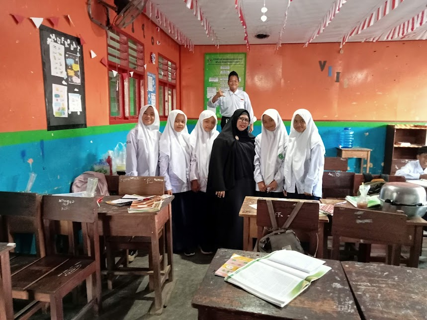
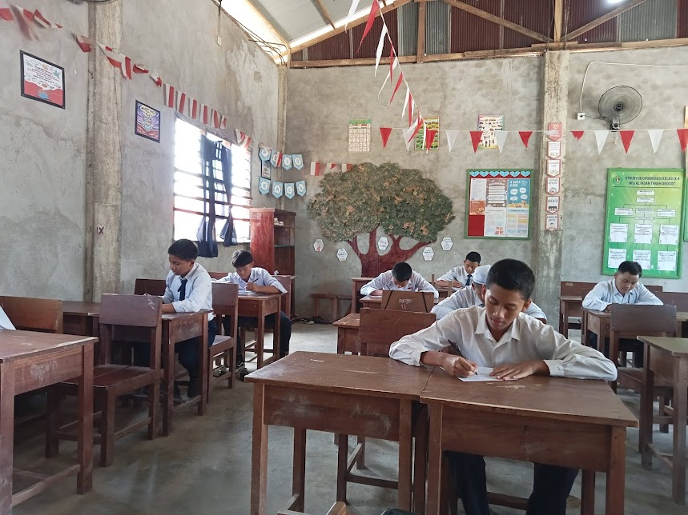

Sambutan Kepala Madrasah
Selamat datang di platform digital resmi MTs Al Ihsan Tanah Grogot. Kami berikhtiar mencetak generasi berakhlak mulia, cerdas, dan berwawasan luas.
Agenda & Pengumuman Terbaru
- 08 Jul 2026: Rapat Koordinasi Wali Murid & Komite
- 15 Jul 2026: Masa Pengenalan Lingkungan Madrasah (MPLM)
- 22 Jul 2026: Seleksi Ekstrakurikuler Unggulan
Perjalanan Sejarah Madrasah
Galeri Foto


Apa Kata Mereka?
"Pembinaan karakter dan keagamaan di MTs Al-Ihsan sangat luar biasa bagi perkembangan anak."
— Orang Tua Siswa Kelas IX"Lingkungan belajar yang kondusif dan guru-guru yang sangat telaten membimbing siswa."
— Alumni Angkatan 2024"Fasilitas lengkap serta program tahfidz sangat membantu pendalaman ilmu agama."
— Perwakilan SantriMTs Al Ihsan Channel
Profil MTs Al-Ihsan Tanah Grogot
Kegiatan Latihan Gabungan PMR Madya
Video SOP Pembelajaran Tatap Muka